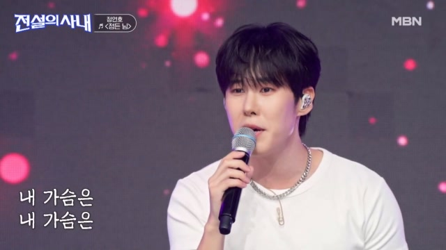
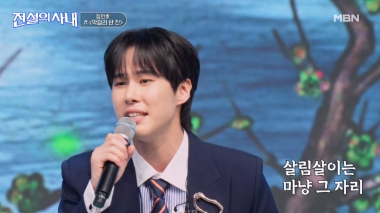
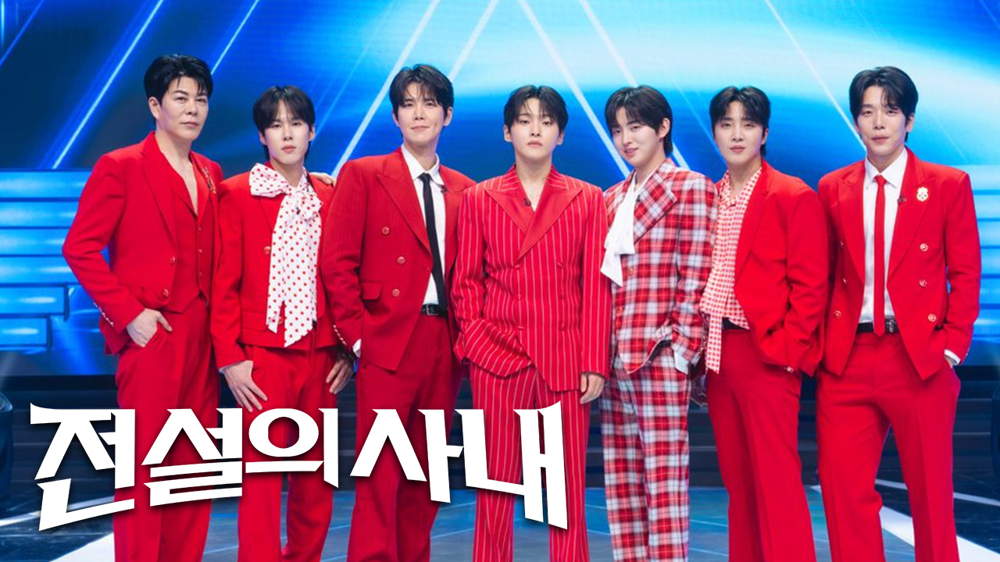

정연호 눈물, 할머니 떠올린 어느 날 문득
방학마다 찾아갔던 할머니, 그 기억에 멈춘 정연호의 말
정연호의 노래와 여러 장면이 담긴 전설의 사내 16회 예고 스틸 · 출처: MBN여러 장면 중에서도 눈을 감고 노래하는 정연호의 모습에 시선이 머무네요.
‘전설의 사내’ 정연호가 할머니와의 추억을 꺼냅니다. 방송을 앞두고 전해진 사연에는 방학마다 병원으로 향했던 시간이 담겨 있는데요.
이번에 부를 노래는 ‘어느 날 문득’입니다. 선곡 이유부터 마음이 쓰여 어떤 무대로 이어질지 기다려지네요.
할머니를 떠올리게 한 선곡

정연호의 정든 님 무대, 과거 방송 자료사진 · 출처: MBN 홈페이지흰 티셔츠 차림은 또 다른 느낌이네요. 편안한 모습도 눈길이 갑니다.
정연호는 16회 ‘심장손상’ 부문에서 ‘어느 날 문득’을 선보일 예정입니다. 이 부문에는 성리와 이창민도 함께해 사랑 노래로 대결을 펼칩니다.
정연호가 이 곡을 고른 이유는 할머니의 사랑이 떠올랐기 때문이라고 해요.
방학마다 병원에서 보낸 시간

정연호의 막걸리 한 잔 무대, 과거 방송 자료사진 · 출처: MBN 홈페이지단정한 재킷에 넥타이까지, 마이크를 든 모습도 잘 어울리네요.
할머니는 오랜 기간 병원에 입원해 계셨고, 정연호는 방학 때마다 찾아가 간병했다고 합니다. 이번 방송에서는 그때의 기억을 직접 털어놓는다고 해요.
다음 방학을 생각하며 흘린 눈물
정연호는 다음 방학에는 할머니를 다시 만나지 못할 수도 있다고 생각했던 순간을 회상하다 눈물을 보인다고 합니다.
짧게 전해진 사연만으로도 먹먹해지는데요. 그 기억을 꺼낸 뒤 ‘어느 날 문득’을 어떤 목소리로 들려줄지 귀 기울이게 됩니다.
황윤성과는 색다른 변신도

정연호를 비롯한 전설의 사내 TOP7 공식 홍보 자료사진 · 출처: MBN 홈페이지붉은 의상을 맞춰 입은 일곱 사람, 개인 무대와 함께할 무대 모두 반갑네요.
같은 날 ‘전설로 떡상’ 부문에서는 황윤성과 정연호가 한 팀으로 나섭니다. 두 사람이 귀여운 캐릭터로 변신하는 무대도 예고됐는데요.
진솔한 사연을 들려줄 무대에 색다른 모습까지 더해진다니, 이번 회차에서는 정연호의 여러 매력을 만날 수 있겠어요.
정수라·조항조와 함께하는 전설 어워즈
전설의 사내 16회는 전설 어워즈 특집으로 꾸며집니다. 정수라와 조항조가 시상식 주최자이자 심사위원으로 함께해요.
TOP7과 배아현·김중연·노지훈·송민경도 출연한다고 하는데요. 정연호의 노래와 함께 선후배들이 꾸밀 무대도 기대됩니다.